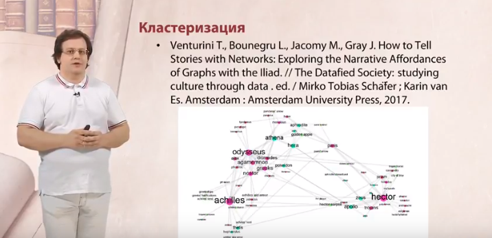

Статья в Digital Scholarship in the Humanities о том, как обстоят дела с оцифровкой фондов в российских музеях. Авторы обобщили данные из 2367 музеев в виде карт, графиков и сводных таблиц. Музейная статистика получена от министерства культуры РФ, раньше ее не исследовали и не публиковали.
Авторы показывают общий пейзаж музейной оцифровки в России — слегка безрадостный, но не безнадежный. Доля экспонатов, переведенных в цифру, ниже, чем в Европе: 14% против 31%. Сильно региональное неравенство: в Северо-западном округе оцифрованы 25% экспонатов (Санкт-Петербург — рекордные 36%), в ЦФО — 11% (Москва — 10%), а в Дальневосточном — только 6%.
Большая часть оцифрованного недоступно онлайн. Так, в Санкт-Петербурге при 36% оцифровки только 0,93% выложено в открытый доступ. Для сравнения в УрФО при 18% общей оцифровки 3,2% экспонатов можно посмотреть в онлайн. Наименее доступны сибирские музеи: в интернете представлены цифровые копии 0,79% их коллекций. Таким образом, огромная часть культурного наследия остается недоступной как для пользователя, так и для цифрового исследователя. Как отмечают авторы статьи, «A question ‘Do Siberian museums exist as data for the researchers in the humanities’ may indeed be asked in this context».
Пока ситуация остается прежней, любые количественные исследования культурных объектов и попытки применить к музейным коллекциям методы анализа данных будут смещены в сторону данных из западных музеев. Сегодня через масштабные инициативы по оцифровке культурного наследия фактически создается «дигитальный культурный канон» будущего — и Россия рискует в него не попасть.
На национальной образовательной платформе идет курс «Гомер глазами филолога» с цифрогуманитарным компонентом. Соавтор курса, доцент школы лингвистики НИУ ВШЭ Борис Орехов, предлагает взглянуть на «Илиаду» через призму сетевого анализа.
Правда, запись на первый сезон курса «Гомер глазами филолога» закрылась 1 октября. Но можно посмотреть промо, подписаться на новости курса — и просто порадоваться тому, что цифровые методы гуманитарных исследований шагают в массы (на курс записалось две тысячи человек).
С 1 по 7 октября прошла III Московско-тартуская школа по цифровым гуманитарным исследованиям «More than DH». В этом году она впервые была двучастной: перед основным потоком тьюториалов был подготовительный этап для желающих освоить базовые инструменты цифрового гуманитария. Небольшой репортаж о школе можно прочитать здесь.
Студенты курса «Введение в цифровые гуманитарные исследования» провели любопытное исследование профессий русских писателей (кроме собственно писательства) на основе данных Wikidata. В большинстве своем они предсказуемо были журналистами, переводчиками, литературными критиками и т.п., но есть и любопытные находки. Из курьезов обнаружилось плетение корзин — это забавно, т.к. есть известное английское обозначение бессмысленного занятия (и бессмысленного университетского курса) «подводное плетение корзин». Остальное см. по ссылке.
DH 2019 в Утрехте — открыта подача заявок на участие. Дедлайн — 27 ноября 2018.
Свежая книжка о количественном анализе литературы: Andrew Piper (2018). Enumerations: Data and Literary Study. Сами не читали, но спешим оповестить, так как имя автора здесь — довольно надежный знак качества. К книге прилагается GitHub-репозиторий с данными.
На этот раз в рубрику действительно попала тень — тень забытого предка в тексте известного современника. Современник — Лев Манович. Предок — Борис Ярхо, с которого когда-то началась эта рубрика.
Тень обнаружилась в последней статье Мановича о культурной аналитике. В статье Манович рассуждает о том, насколько переносимы количественные подходы из социальных наук и коммерческой (маркетинговой, рекламной и т.п.) аналитики — в сферу исследований культуры. С одной стороны, гуманитариям предлагается отбросить страх: «In fact, if you are in the arts or humanities, such ideas may make you feel really uncomfortable. And this is precisely why we should explore them». С другой — в очередной раз звучит мысль о том, что в культуре интересно как раз то, что не укладывается в статистические модели — выбросы, «шум», погрешность.
Что же предлагает делать Манович? Все-таки измерять — но с оговорками. Измеряя один или множество признаков культурного объекта, не забывать, что кроме этих признаков есть другие, может быть, более значимые. Не сводить культурное разнообразие к вариациям набора «структур» (критика структурализма в статье вообще прописана прямым текстом). Не создавать упрощающих классификаций культурных форм и вообще бороться с категоричностью человеческого мышления.
Как этого добиться? В конце статьи Манович предлагает свой рецепт — в нем-то и возникает тень Ярхо. Вместо случайных измерений того, что легко измеряется, Манович предлагает создавать метрики для самых фундаментальных характеристик культурных объектов. К таковым он относит разнообразие, структурные свойства, динамику (диахроническую изменчивость) и вариативность (величину отклонения в синхронной выборке). Здесь есть явная перекличка с «множественностью, непрерывностью, бесконечностью и изменчивостью», которые, по Ярхо, должна учитывать наука при работе с объектом исследования (см. Методологию точного литературоведения, с. 7 и с. 22).